动画很漂亮，物理是否可信？
分析对象是网页、动画、源码、数值和图表这个成品。重点检查对象、条件、变量映射、同源性、特殊值和独立复算。
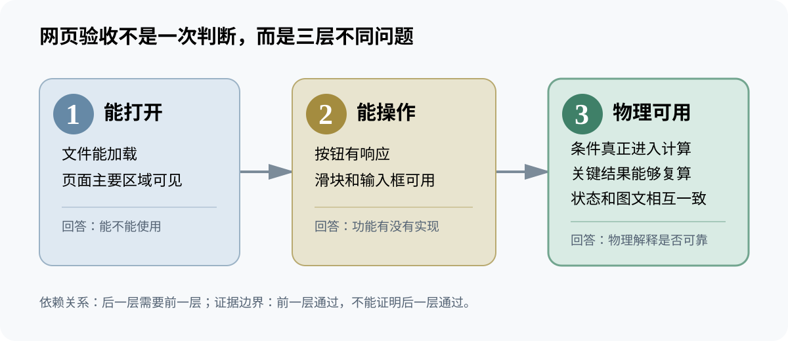
- 回答：这个页面能否进入物理课堂。
- 不回答：学生为什么让错误留在作品里。
这页帮助理解教师需求、十六章关系、本轮结构结论和A级材料链。逐章证据可点击进入自由跳转页，再从材料标签打开Markdown卡。
第6/13章分开成品与过程，第11章分析未发生的比较；机械能H02/W02同时改为同一课例打磨链。
分析对象是网页、动画、源码、数值和图表这个成品。重点检查对象、条件、变量映射、同源性、特殊值和独立复算。

分析对象是学生消息、修改动作、成品证据及其错位。重点保留学生说对的关系，补足条件并要求验证。
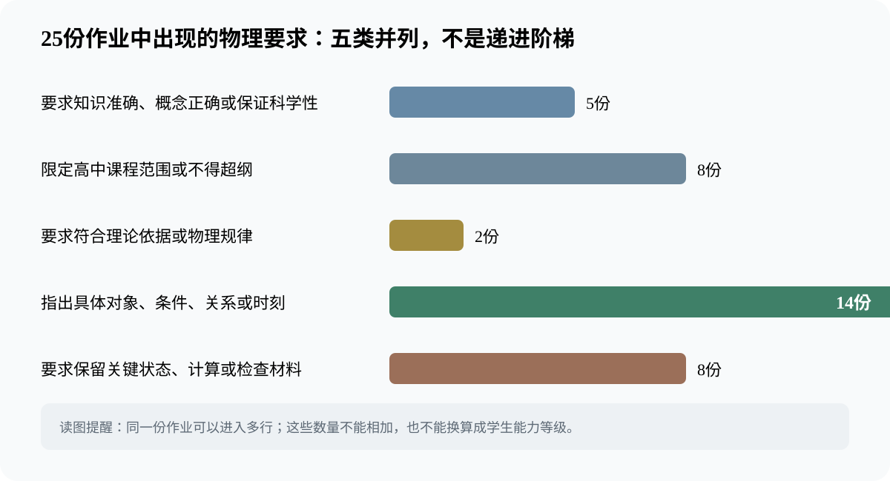
六组按三种方案组织，每种方案由两个组完成，同方案一组汇报、一组提问。课堂没有安排跨方案提问。这个不足可以揭示：共同主题和并列方案仍不足以产生证据比较，教师还要设计共同尺度、跨组角色和冲突追问。
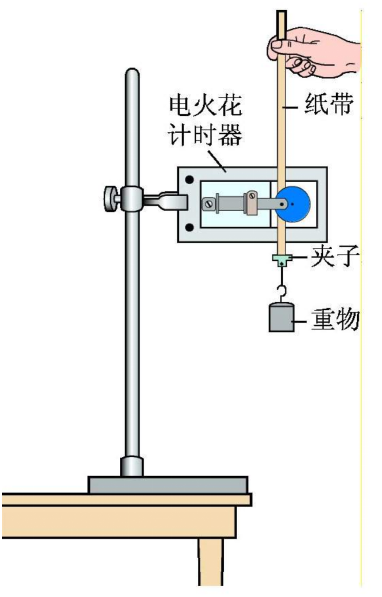
自由落体纸带法由纸带点迹估计速度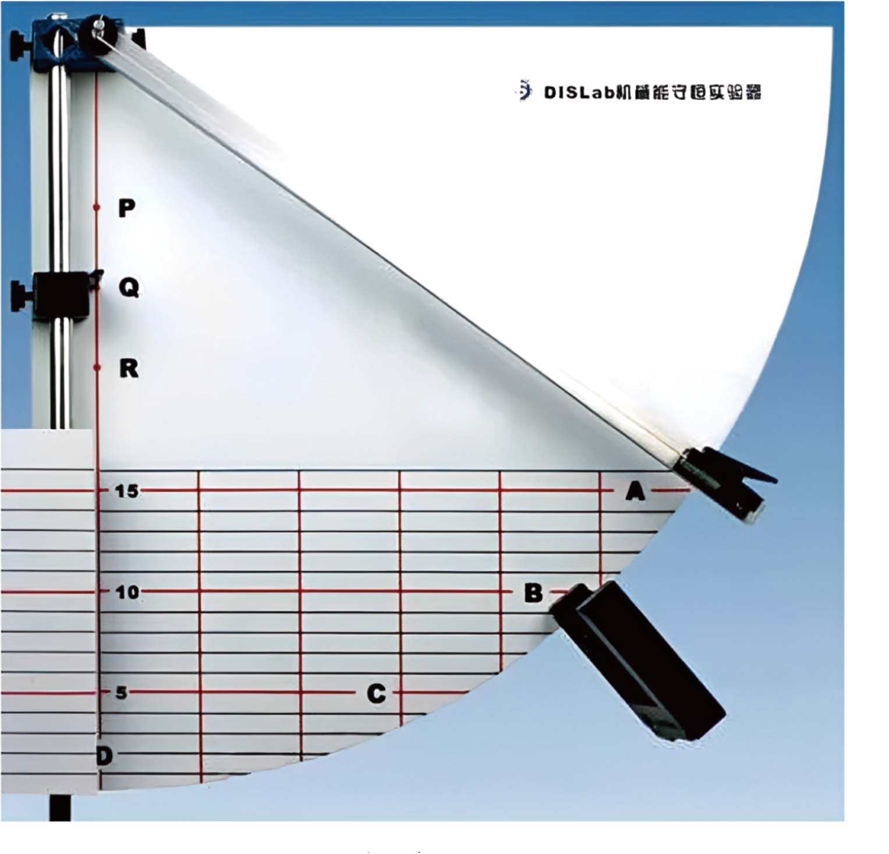
圆柱体摆动DIS法测量结果与模型简化并读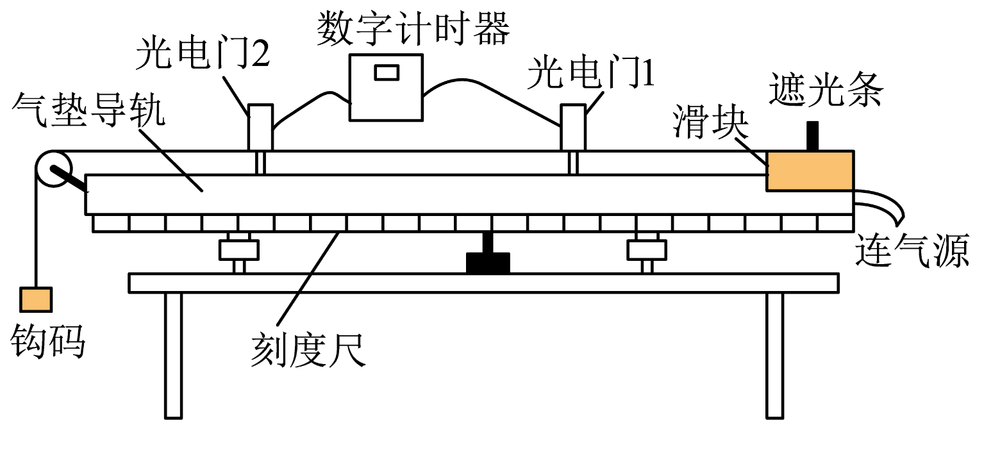
气垫导轨系统法系统边界与光电门模型版本关系：黄灿斌、严力耕先后在校内讲授并参与打磨，最终成熟成品由王硕承担区级公开课；不再制造黄／王双案例。
它们不是为了增加硬件篇幅，而是分别回答“关系怎样显形”“速度怎样测”“力怎样变成可信数字”。

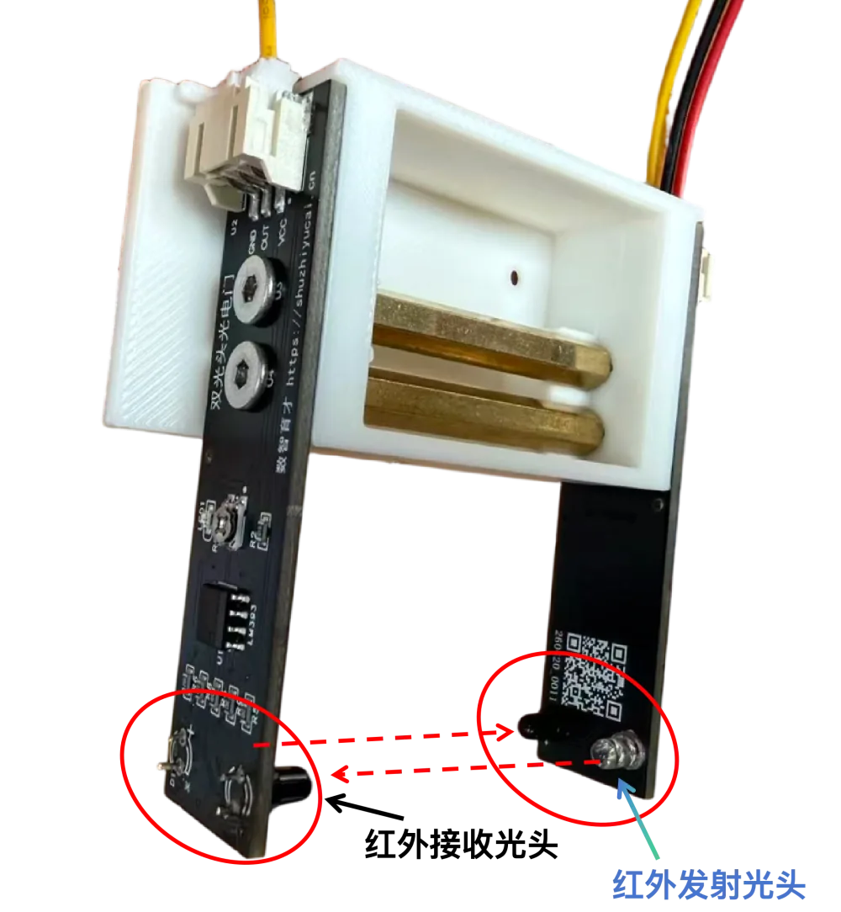
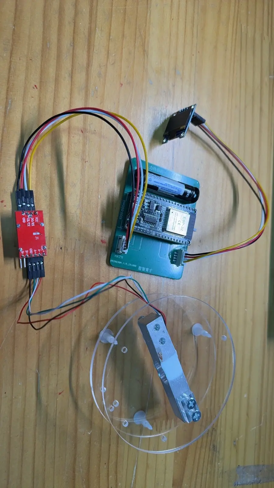
其教学脚手架并入第5章，设备治理与接手进入第16章，技术细节进入配套资源。释放出的章位优先研究AI批改、错误归因、错题思维链和动态干预；没有厚案例就与第12章合并或暂留。
目录不是材料格子。每一篇都让读者获得一种新的判断或行动能力。
材料丰富不直接带来章节价值。作者需要看见每个价值怎样被真实项目支撑，以及证据停在哪里。
四篇论文的详细稿没有被简单搬进书，而是按读者问题拆分到不同章节。
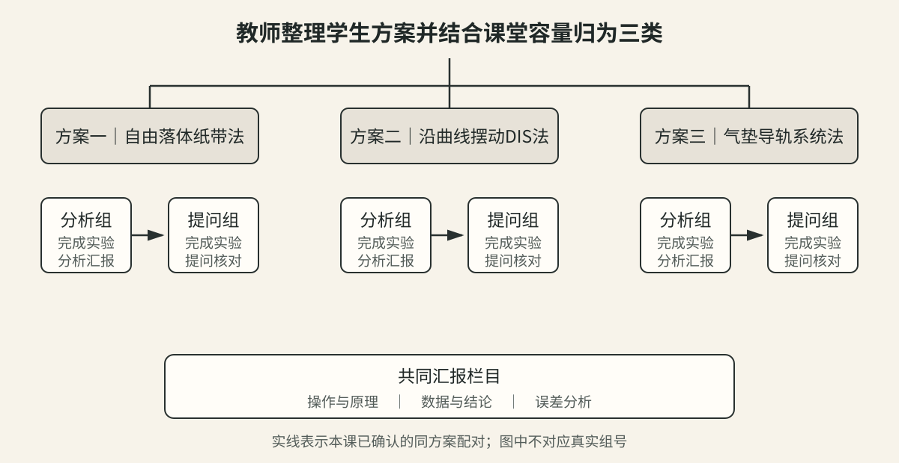
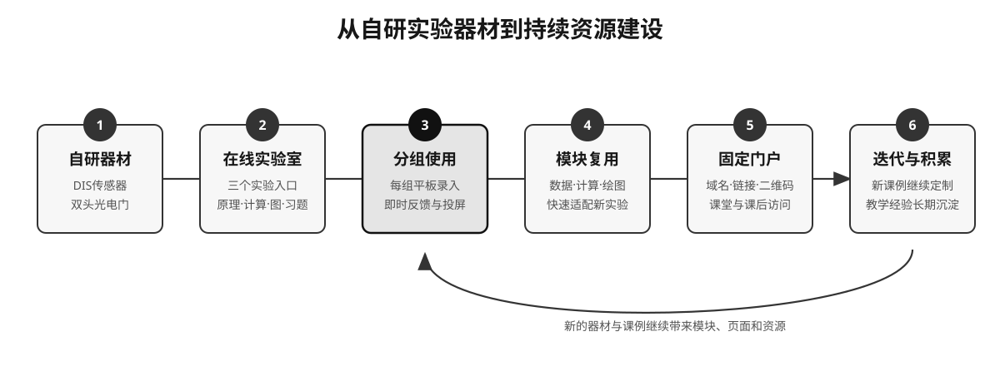
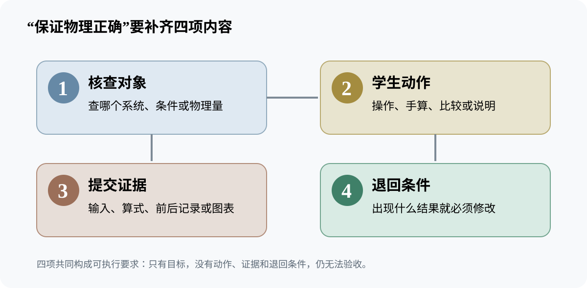
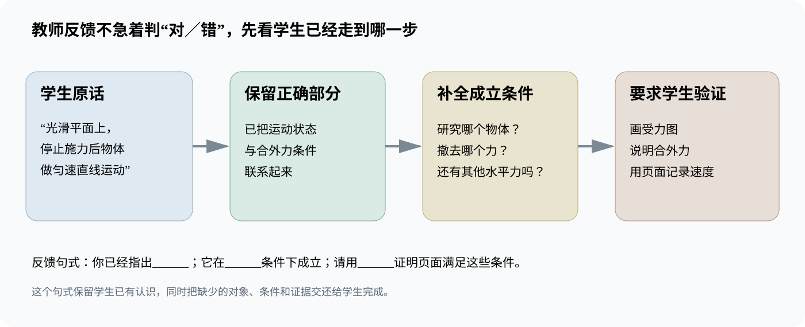
这里只看每章的独立承诺。展开与材料请到自由跳转页。
从真实需求、AI新条件和不可外包判断进入。
让表征进入比较、解释与论证动作。
把想法翻译成可做、可验的规格。
活版电路与静电场描绘仪形成共同轴。
双头光电门—HX711—超失重仪生长链。
确认对象、变量、图表与结论同源。
需要调研、基准与真实干预试点。
共同任务、复用入口与维护责任。
从现象到受力、加速度和示数解释。
预测、变量、测量、图表与论证。
并列方案需要共同尺度和跨组追问。
区分表达证据、关系断点与诊断假设。
分开过程与成品，给出下一步反馈。
已删虚假比较；保留或并章待裁决。
让主张强度与实际材料匹配。
保存版本、责任、失败、边界与停止条件。
遗漏审计的目的，是让作者看见取舍，而不是提高材料使用率。